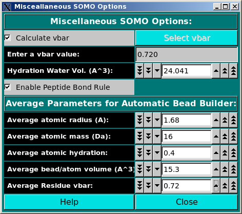

| |
Manual |

In this module, you can set some options affecting both the model building and
the hydrodynamic computations stages. The Calculate vbar checkbox
allows the computation of the partial specific volume (vbar) in standard
conditions (water @ 20°C) of the structure from its composition, using the
residues' values stored in the residue table
(default: active). Alternatively, a vbar value (either computed by
other means or measured) can be entered in the Enter a vbar value (cm^3/g)
field. If a significant number of non-coded or incomplete residues are skipped when
parsing the PDB file, the computed vbar could be not correct; likewise, if
the Automatic Bead Builder is used for
non-coded residues, the vbar could also be incorrect. In these cases, entering
an experimental value will be the best option.
If a vbar value is entered in this field (and the Calculate vbar checkbox
is deselected), a message will be displayed in the progress window ("ATTENTION: vbar = ")
when the model is being built. This should avoid the use of incorrect external vbar
values resulting by inadvertently leaving the Calculate vbar checkbox deselected
from a previous model-generating session.
The Select vbar button will instead load
a vbar value calculated from protein sequence by using the UltraScan
vbar calculation routine. WARNING: whenever possible, use experimental vbar
values, as many factors can affect its computation!!!! The routines provided here should be
considered just as a best approximation in absence of experimental data.
The Hydration Water Vol. (A^3) field sets the volume of the water of hydration molecules, which has been found (Gerstein and Chothia, Proc. Natl. Acad. Sci. USA 93:10167-10172, 1996) to be on average 24.5 A3, different from that of either bulk (29.7 A3) or isolated (11.5 A3) water molecules (default: 24.041 A3).
The Enable Peptide Bond Rule checkbox controls if the peptide bond rule is used by the SoMo method. With this rule, the peptide bond segment is used for the main chain beads of a protein structure. These beads are thus positioned at the cog of the (CA-C-O)n-(N)(n+1) atoms, except when PRO is the (n+1) residue. In this case, the peptide bond bead is positioned at the cog of the (CA-C-O)n atoms. Additional rules control the generation of the OXT bead and of the first N atom at the beginning of each protein chain. All these rules are controlled by "special" residues in the somo.residue table. To gain total control over the positioning, volumes and masses of every bead, the Enable Peptide Bond Rule checkbox should be deselected. In this case, the descriptions present in the somo.residue table are fully effective. (default: selected).
The Average Parameters for Automatic Bead Builder: submenu contains a
series of fields governing the average parameters that will be used by the
Automatic Bead Builder routine when this option is selected (see
here) for non-coded residues.
This document is part of the UltraScan Software Documentation
distribution.
Copyright © notice.
The latest version of this document can always be found at:
http://www.ultrascan.uthscsa.edu
Last modified on September 3, 2009.
{kind=link}